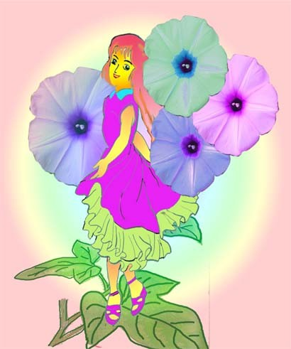

八月花语--牵牛花 梦幻爱情
江銘輝 五夢網

小时候在台湾的郊外或小溪旁边到处可看见牵牛花，有一个童谣说：「竹离下，有棵花，什么花？牵牛花。牵牛花，真好笑，不牵牛牵喇叭。好像一只小乐队，滴滴答答、滴滴答答。」的确牵牛花不牵牛，却像一只小喇叭，因此有人说它是喇叭花。而日本人叫它作朝颜，因为它总是一大早就开花，可是午后就凋谢了，生命很短暂。牵牛花的寿命为什么这么短暂，这是因此牵牛花的花瓣大而薄，又含有水份，且在夏季开花，受到炎热的太阳照射，花瓣里的水份蒸发很快，又因为花茎很长，根部来不及补充水份，所以到中午就凋萎了。牵牛花在日本受到厚爱，有旷世小说《源氏物语》可证，书中曾用很美丽的文字描述牵牛花说：「源氏拉开纸门，站在庭院之前，抬头看着灿烂的晨曦，他一低头，不经心地发现牵牛花缠绕在许多凋零的花朵之中，若隐若现，只见一股清香扑鼻而来‥‥」
1千多年前，日本僧侣从中国带回牵牛花种子，后来集中种植在上野动物园附近的入谷地区，如今不但是东京著名的牵牛花产区，更成为东京怀旧的观光景点。
有关牵牛花的传说如下：
1. 牵牛花的由来
有关牵牛花的由来有三种：
l 牛车载运贩卖
在中国，牵牛花已经变成药用的植物，牵牛花的种子叫做「牵牛子」，因此用牛车载运到处去贩卖，因此叫牵牛花。
l 老农感恩
根据《本草纲目》记载，有一农夫因为服用牵牛花种子而治好痼疾，感激之余牵着自家的水牛，到田间蔓生牵牛花的地方谢恩。
l 仙女的织物
另一种说法是因为牵牛花的花朵内有星形花纹，花期又与牛郎织女星相会的日期相同，故人们说牵牛花是天上仙女一年一度与牛郎见面时的织物。想起七夕的牛郎与织女相会，这一天充满罗曼蒂克，也是中国的情人节。「牵牛」是银河系东面的一个星宫．亦称「牛郎星」。牛郎星与西方的织女星遥遥相望，只有一年一度的七夕才得以鹊桥相会。受到天帝的惩罚，牛郎与织女只有一夜相聚的时间，二人好不容易在这天会面，于是你浓我浓，互相倾诉，织女一面倾诉，一面织出了一朵又一朵美丽的花儿，许许多多五彩缤纷的花儿被织绣出来，装饰在牛郎的耕牛上。 天亮了，织女与牛郎被迫分离，等待下一年的相聚，耕牛也跟着离开却忘记将它带回，而把美丽的花朵遗留在人间，为田野．荒地装饰着一片欣欣向荣的景致，人们称她为「牵牛花」。
2.银色 喇叭花
牵牛花有个俗名叫“勤娘子”，也就是说是一种很勤劳的花。每当公鸡刚啼，时早上4点，牵牛花就开放出一朵朵似喇叭的花来。晨曦中人们一边呼吸着清新的空气，一边欣赏美丽花朵。
牵牛花是怎么来的呢？一段动人的传说呢。
很久以前，有一个地方，有一座像伏着的牛，大家就叫它为“伏牛山”。伏牛山下有个小村子，都很穷，没有钱买牛耕地，只有用自制的工具来刨土、耕地。有一对孪生姐妹住在山脚下，开垦荒地，靠着自己的双手，春播、夏耘、秋收，日子还算勉强过得去。姐妹二人心地善良，还经常接济比自己更穷的人。
一天，姐妹二人正在刨地，姊姊突然刨到了一块特的物体，发出闪闪的银光，妹妹跑过去将它起，原来是一个银色喇叭状的花。二人正在奇怪时，突然走出一个白须白发的老翁，笑着对她们说：「这座山里面压着100头青牛精，他们经常幻成人形，在人间作恶，玉帝将他们收服，压在山里，到今天已压了900年了，明天他们就会变成金牛，再也不会危害人间了。这个银喇叭就是伏牛山的钥匙，也就是金眼，只要把银喇叭插进去就可答得到一大堆的金子。不过还必须记住口诀念三遍「伏牛山，哗啦啦，开山要我这只银喇叭」，那金眼就会变大，人可以进去抱出一头金牛，一辈子吃喝不愁了。这钥匙是九百年一现，只有片刻灵验，天一亮就不灵了，千万不要被山关住了，否则就必死无疑。还有，这银喇叭千万不能吹，否则一百头牛就全会变活冲出山口。」两姐妹还没回过神来，那老翁已不见了。
二人知道遇上神仙了，心里很高兴。赶紧回家，商量如何抱金牛。姐姐说：「我们要把腿脚放快，把100头金牛都抱出来，分给乡亲，让大家过好日子。」妹妹说：「金牛虽好但不能当饭吃，黄灿灿的黄金，在富人眼里很值钱，可在穷人眼里还不如一瓢饭呢？如果吹响喇叭，把那些金牛全变成活牛分给乡亲们，让他们有牛耕田，不更好吗？」姐姐高兴地同意了妹妹的意见。
于是，姐妹二人去通知乡亲们，告诉他们夜里去伏牛山下牵牛。山上放出一道耀眼的金光，姐妹俩急忙朝发光的地方跑去，只见那金眼有手指那么粗，顺着洞眼往里看，见到内有一张金色方桌，方桌上整齐地摆着一排排馒头大小的金牛。妹妹忙把银喇叭拿出来插进金眼，姐姐忙念：「伏牛山，哗哗啦，开山要我这银喇叭。」念了三遍，金眼慢慢变大了，但只容一个人钻进去，姐姐闪身就进去了，妹妹也跟着。姐姐一进去就吹起了银喇叭，顿时桌上的金牛都变活了，跳下桌子来，就都变成了大牛往外冲，当最后一头牛伸出头时，东方已经泛红了，金眼慢慢变小了，这一下要急坏了姐妹俩，姐妹二人合力推牛屁股，就是推不动。
再说乡亲们，听见喇叭响，就纷纷往伏牛山跑，只见一头头牛满山跑，他们跑上去，一人牵一头牛，心里好感激姐妹二人，都想去谢谢她们，就是找不到人影。这时有人发现她们被卡在金眼内，大家有的扯牛头，有的扯牛脚，使命往外拽，就是拽不出，后来有人往牛鼻子上套了个鼻圈，再在鼻圈上拴了根长绳，大家齐心协力地拉，牛被拉疼了，一急，四蹄一蹬就出来了，金眼马上就合拢了，姐妹俩却被关在了山里。后来伏牛山就开满美丽的喇叭花，人们说这是姐妹变成的花。
3.牵牛花的秘密
这是一本书，这本书从 1986 年起便告绝版，但读过的人都难以忘怀。
推动《牵牛花的秘密》重新出版的大功臣，当属普立兹小说奖得主珍‧史麦莉（Jane Smiley）。她在《读小说的十三种方法》中列举了百大经典小说，书单中全是我们耳熟能详的作品，唯独《牵牛花的秘密》已经绝版、而且几乎被世人遗忘。
许多书评认为这本书是能与《飘》和《梅冈城故事》相提并论的美国文学经典。
小说的背景设定在1950年代的密苏里州乡间，朴实保守、宗教气氛浓厚的风土民情跃然纸上。开场时，索姆斯家的马修和卡莉夫妇年近七十，三个女儿早已远离他们的生活空间，或结婚生子、或远赴大都市工作，只有在每年夏天短暂回到家乡的农场。故事开始于那一年她们留在故乡的最后一天。全家人为那一天安排的野餐与郊游不断被邻居的邀约、周围的意外所扰乱，他们最后得以共享的时光，只有在黄昏中等待牵牛花开。
索姆斯一家人在暮色中等待牵牛花开时，说了一段感言：「我们转身，向彼此微笑，不知怎么地更觉轻松，内心震颤、如获新生。牵牛花的盛放是个奇迹，也像所有真正的奇迹一样有着疗愈的力量。」
4. 牵牛花开的日子
有部影片叫牵牛花开的日子，故事叙述身为大哥如父照顾弟弟妹妹，妈妈虽然是四个孩子的妈，却是个一心追求爱情的女人，家庭的重担都落在大哥身上，二哥的叛逆、三妹的失智及年幼的小弟，然而这一家人经历过重重磨难，一如牵牛花一样，不需要施肥、呵护，只要阳光、空气、水，就能繁华盛开！
5. 梅兰芳与牵牛花
京剧大师梅兰芳对花卉十分喜欢。特别喜欢牵牛花。牵牛花秀冠柔条，风姿绰约，为了使牵牛花开出更多鲜艳的花朵，梅兰芳先生买了好多参考书，按图索骥的实践起来。
梅兰芳先生还同养花的朋友们组成了一个小团体，彼此见面三句话离不开牵牛花。他们互相赠送良种，共同观摩研究,还经常开小型花展，约定一个日子，在养花朋友的家中轮流举行。梅兰芳先生之所以爱花成癖，是有其原因的。他把观察花草作为自己塑造的人物，丰富和提高表演艺术的源泉。他养牵牛花是因为牵牛花在大清早开花，他常与牵牛花比赛谁起得早。梅兰芳总是抢先一步。一次，他正俯身闻花，被朋友看见，朋友谑称他正练习"卧鱼"。他因此从中得到启示，仔细揣摩，反复研究、实践，终于使贵妃赏花的"卧鱼"身段更加完美、生动、传神，看来梅兰芳爱花之意还不全在花呢!
清晨，晶莹剔透的露珠在叶尖上打转，牵牛花已经迫不及待地展开笑颜，迎接着晨曦、迎接美好的一天的到来。争相绽放的牵牛花，就像是一支支鸣声响亮的喇叭，在晨光中为人们吹起了起床号，人们昵称它为「喇叭花」。由于它在晨曦中展露花颜，姿态姣好．花颜可人，因此日本人称她为「朝颜」:西方人则称它为：「Morning Glory」，意指：「早晨的荣耀。」花语是梦幻般的恋情。